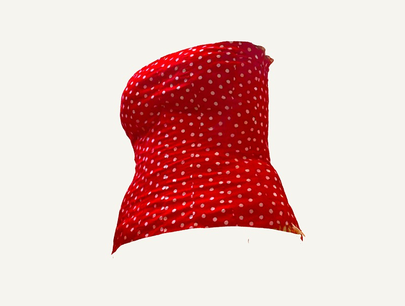
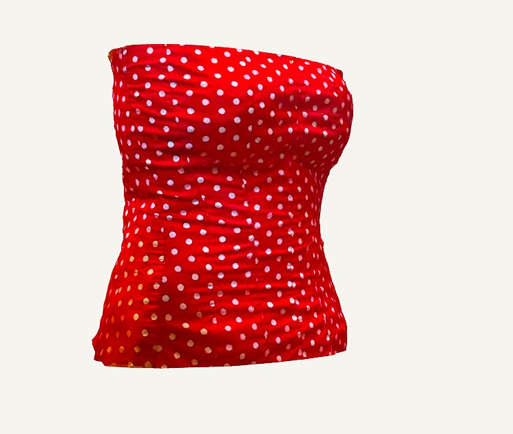
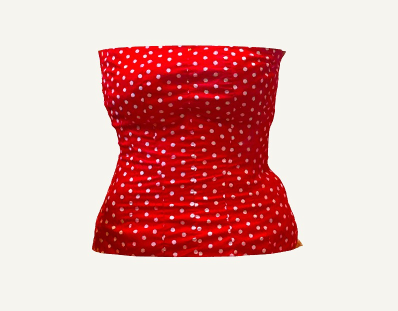
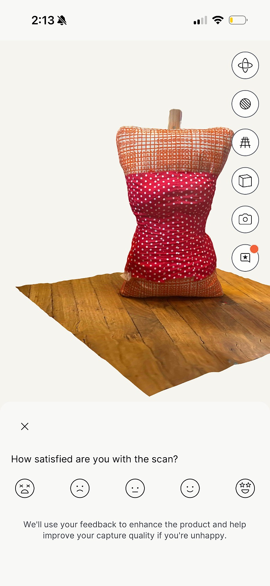
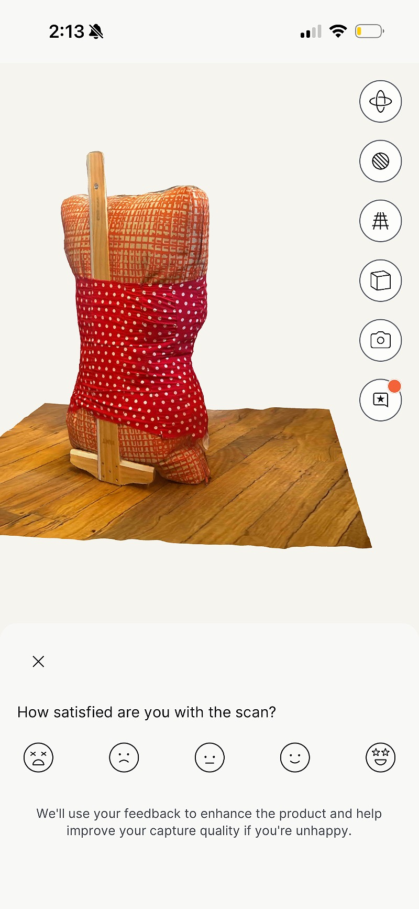
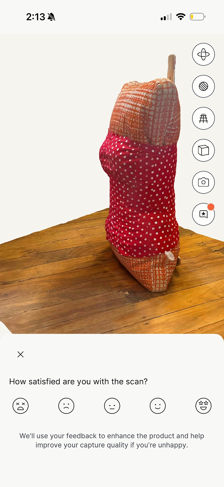

I pushed ahead with the custom mannequin, despite not being totally happy with it as a representation of my body. I stuffed it with a pillow and some fabric scraps and stood it up using a T Square. I thought that perhaps creating 3D digital model of the bust might be more useful and so I used the polycam app and made a 3D scan of my mannequin. This was pretty cool, but for some reason I was unable to figure out how to remove the colour/pattern from the scan, which was a problem since I had used red polka dot fabric. It was at this point that I gave up of projecting the words digitally in 3D space and moved into illustrator and photoshop as my last resort.






make space!